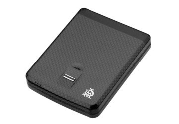
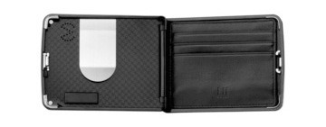

Tue, 01 Feb 2011 06:41:00 · gadget · design · jamesbond · biometrics
Fingerprints Wallet for the James Bond in you!

If you always envy all those cool gadgets that onlyJames Bond could have, here’s one that you could have to add some extra awesomeness to your swagger; a fancy biometric wallet that only opens to your fingerprints.
The special thing about this Dunhill Biometric Wallet is that it will only open via a fingerprint activation sensor that register up to 10 different fingerprints.
In addition, it can also be linked via Bluetooth to the owner’s mobile phone - sounding an alarm if the two are separated more than 5 meters; great for someone like me who keep losing things!

Although the virtually indestructible and lightness of its design may appeal to your inner geek, get ready to reach your pocket deeper for this sophisticate gadget as it will set you back about $825…